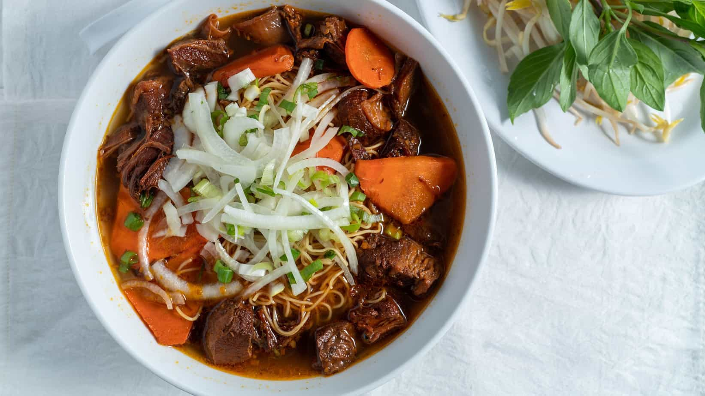
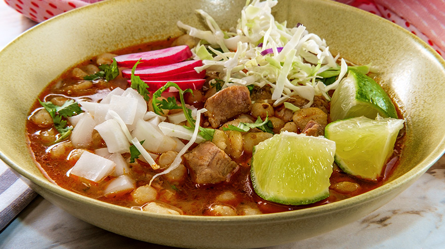
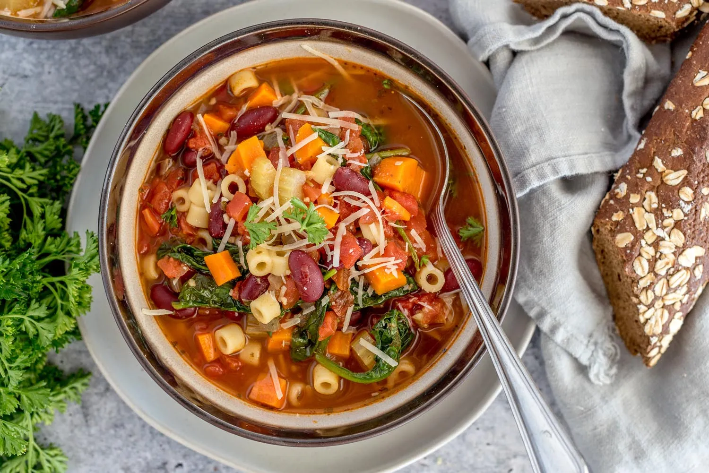

Soups from around the world
Some facts and information about the soups and where they are from.
Asia
Asia has a variety of soups as it contains many, many countries. This ranges from
a savory soup, Kuoy Thiew from Thailand to lamb stew soup, Laghman, from Tajikistan.

Laghman, Tajikistan soup, made from lamb
North America
This beautiful land has many cultures and soups, especially in America and Canada. These soups can come from all around the world
but some soups that most people will know is Chicken Noodle soup or Mexican Pozole.

Pozole from Mexico
Europe
With a rich history and many different cultures, Europe has some soups that are famous too, including French Onion Soup (France!) and Minestrone from Italy.
Minestrone from Italy